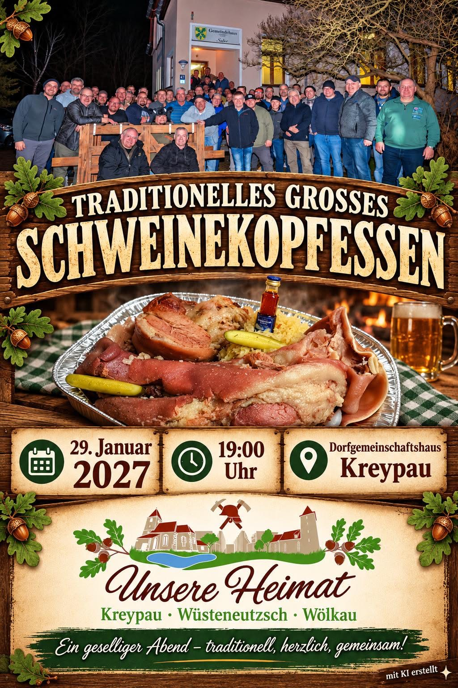

Schweinekopf
Der Klassiker für unseren gemeinsamen Abend.
GEMEINSAM AM TISCH · 2027
Ein geselliger Abend, ein herzhaftes Essen und gute Gesellschaft. Wir treffen uns zum traditionellen großen Schweinekopfessen in Kreypau.
Zum Anmeldebereich29. Januar 2027 · 19:00 Uhr · Dorfgemeinschaftshaus Kreypau · Anmeldung bis 28. Dezember 2026

DU HAST DIE WAHL
Der Klassiker für unseren gemeinsamen Abend.
Deftig genießen. In bester Gesellschaft.
DEIN PLATZ AM TISCH
Dein Name. Dein Einladungscode.
Dein Lieblingsgericht.
Du brauchst kein Benutzerkonto. Deinen persönlichen Einladungscode erhältst du von André. Mit ihm kannst du deinen Essenswunsch bis zum Anmeldeschluss ändern. Bitte gib den Code nicht weiter.
Die Anmeldung ist derzeit geschlossen. Informationen erhältst du bei André.
Bindestriche und Leerzeichen sind erlaubt. Bei Verlust wende dich bitte an André.
Wir verarbeiten deinen Namen und Essenswunsch für die Veranstaltungsplanung. Details im Datenschutzhinweis.
In dieser Vorschau werden keine Anmeldungen oder Besucherzahlen gespeichert.